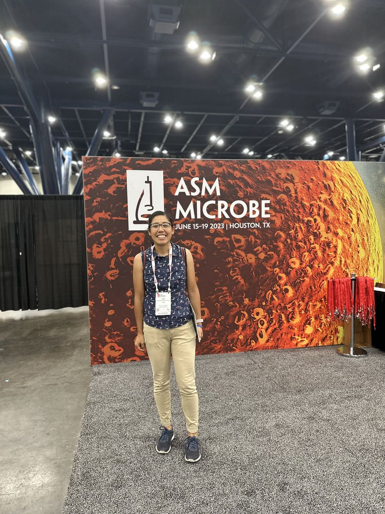

An interactive CV
One scientist,
one long climb uphill.
Scroll to ride along the journey of a first-generation phage biologist, from a small town beside a pyramid in Puebla to an independent research program. Our phage takes the bike; you take the scroll.
Scroll to beginWhere the climb begins
The starting line
Born and raised in Cholula, Puebla, in the shadow of the world's largest pyramid, and the first in my family to enter a university research lab. No map for this route; just curiosity about the invisible living world and the stubbornness to keep pedaling.
- First-generation college student & scientist
- Rooted in the Talavera-blue culture of Puebla
- Future SACNAS member & mentor for first-gen students
Bachelor of Biology
2008 – 2013
At the Meritorious Autonomous University of Puebla (BUAP), I earned my B.Sc. in Biology and got my first taste of microbiology research.
- Thesis: monitoring & molecular detection of enteropathogenic E. coli from sewage water, capable of degrading an azo dye
- First publication & first conference talks (2012–2014)
- Summer research fellow, Mexican Academy of Sciences (CICY, 2012)
Master of Science in Genetics & Molecular Biology
2014 – 2016
I joined CINVESTAV and the Kameyama Lab, where I first fell for bacteriophages, starting with a mysterious gene of unknown function.
- Thesis: characterization of the ORFan gp26 of E. coli bacteriophage mEp021
- Cloning, expression & functional genetics of atypical coliphages
Doctorate of Science in Genetics & Molecular Biology
2016 – 2022
My Ph.D. dug into how non-lambdoid phages control their own gene expression, uncovering an N-like antiterminator that flips the switch on early transcription.
- Thesis: early transcription antitermination of phage mEp021 regulated by the Gp17 (N-like) protein
- Defined a novel Nus-dependent, non-lambdoid coliphage group
- Published in Archives of Virology (2023)

Postdoctoral Researcher, Center for Phage Technology
May 2023 – present · Ramsey Lab
At the Center for Phage Technology, I crossed into a new system: how phage Mu times its lysis, and how phages can disrupt biofilms and be engineered as tools.
- How a global regulator (Gp24) reshapes host transcription to tune lysis timing
- Isolated & characterized biofilm-disrupting Proteus phage Premi
- Authored the field guide "How to introduce a new bacteriophage on the block."
- Presented in Madison, Houston, Cedar Hill & Cairns, Australia
Distance covered so far
Across labs in Mexico and the United States, and three countries' worth of conference badges.
Building an independent lab
The road ahead
I'm preparing to launch my own research program in bacteriophage molecular biology, mentoring a new generation of scientists and opening the door a little wider for the first-gen students coming up behind me.